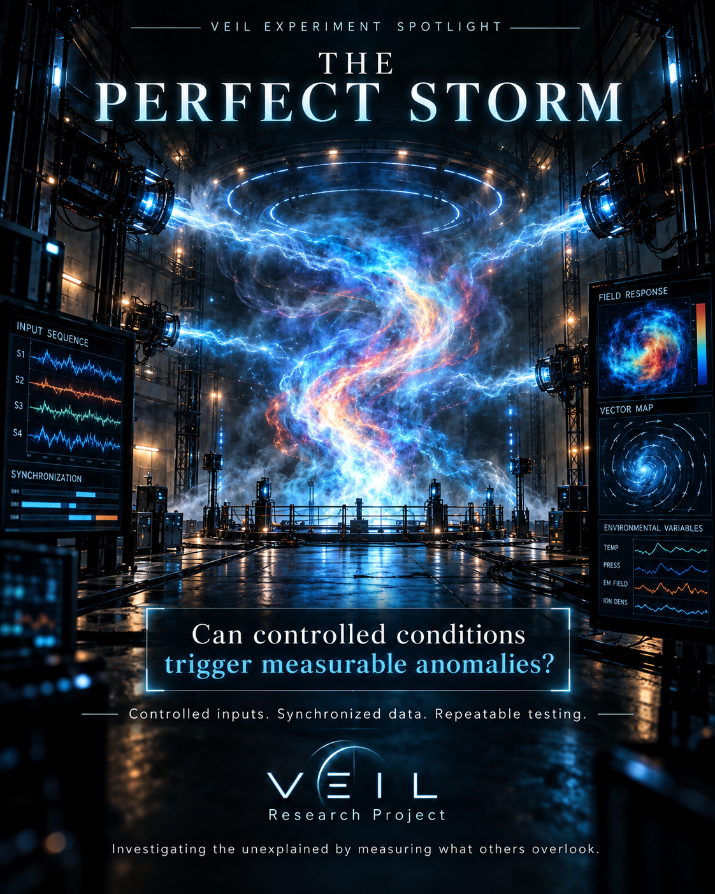

Design direction
Use electronically phased coils for rotating field studies rather than assuming mechanically rotating sources will create a stable field.
A proposed multi-axis exposure apparatus using established electromagnetic physics. It is not a validated paranormal detector and no unexpected response has been demonstrated.

Use electronically phased coils for rotating field studies rather than assuming mechanically rotating sources will create a stable field.
Compare direction, magnitude and phase configurations while monitoring calibration, heating, interference and instrumentation artifacts.
Concept and virtual characterization only; no claim of anomalous response or verified physical performance.
These are requirements and decision criteria to develop—not completed validation or an indication that all four gates have been passed.
Multi-axis coils and phase-driven rotating magnetic fields are established techniques. Novelty of this particular apparatus is not established.
Magnetic induction is established. No established causal link to paranormal activity, environmental replay or historical-memory retrieval has been shown.
With expert safety oversight, quantify waveform, phase, field uniformity, heating, residual fields and sensor interference against references and sham trials.
Do not proceed to anomalous-response trials if desired field conditions are not reproducible or conventional after-effects cannot be ruled out.
VEIL’s planned instruments share a common emphasis: synchronized measurement, rigorous controls, raw evidence preservation and transparent review.
Contact · Collaborate · Support →